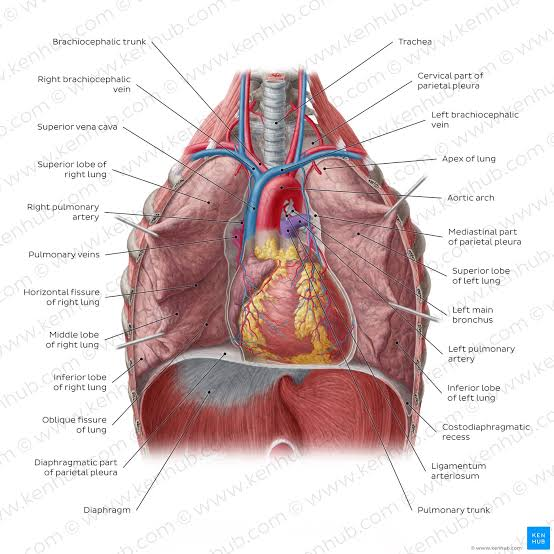

Your Complete Lung Health Resource
Asthma is a chronic inflammatory disease of the airways causing wheezing, coughing, and difficulty breathing. Triggers include allergens, exercise, and respiratory infections. Diagnosis involves lung function tests. Treatment: inhalers, corticosteroids, bronchodilators. Lifestyle management is important.
Pneumonia is a lung infection causing inflamed air sacs filled with fluid/pus. Causes: bacteria, viruses, fungi. Symptoms: cough, fever, shortness of breath. Treatment: antibiotics, antivirals, supportive care. Prevention: vaccines, hygiene, avoid smoking.
Asthma is a chronic lung disease that causes the airways to become inflamed and narrowed. Symptoms include wheezing, shortness of breath, chest tightness, and coughing, often worse at night or early morning. Triggers can include allergens like pollen, dust mites, mold, pet dander, or irritants such as smoke, pollution, strong odors, and respiratory infections.
Causes of asthma involve genetic factors, environmental exposures, and sometimes early childhood respiratory infections. People with a family history of asthma or allergies are more prone to developing it.
Diagnosis involves medical history review, lung function tests (spirometry), and sometimes allergy tests. Treatment includes quick-relief inhalers for acute attacks and long-term control medications like inhaled corticosteroids. Lifestyle adjustments and avoiding triggers are crucial for management.
Prevention includes reducing exposure to allergens and irritants, maintaining a healthy diet, exercising appropriately, and following an asthma action plan. Education on proper inhaler use is vital. With proper care, individuals with asthma can lead active, normal lives.
Bronchitis is the inflammation of the bronchial tubes that carry air to and from the lungs. Acute bronchitis often follows a cold or respiratory infection, whereas chronic bronchitis is a long-term condition, usually caused by smoking or repeated exposure to irritants like chemical fumes or dust.
Symptoms include persistent cough, mucus production, fatigue, shortness of breath, and sometimes mild fever. Chronic bronchitis is part of Chronic Obstructive Pulmonary Disease (COPD).
Treatment for acute bronchitis focuses on symptom relief, such as rest, fluids, and sometimes cough medications. Chronic bronchitis treatment includes bronchodilators, steroids, oxygen therapy, and lifestyle changes, especially smoking cessation.
Prevention involves avoiding smoking and polluted areas, wearing masks if necessary, getting vaccinated for flu and pneumonia, and maintaining overall lung health. Early detection and management improve quality of life.
Lung cancer is the uncontrolled growth of abnormal cells in one or both lungs. Smoking is the primary risk factor, but exposure to radon, asbestos, and air pollution can also contribute. Symptoms include a persistent cough, chest pain, shortness of breath, coughing up blood, fatigue, and unexplained weight loss.
There are two main types: non-small cell lung cancer (NSCLC) and small cell lung cancer (SCLC). Diagnosis involves imaging (X-rays, CT scans), biopsies, and lab tests to determine cancer type and stage.
Treatment options depend on cancer type, stage, and overall health. They include surgery, chemotherapy, radiotherapy, targeted therapy, and immunotherapy. Early-stage lung cancer has better prognosis, emphasizing the importance of early detection.
Prevention focuses on avoiding smoking, limiting exposure to harmful chemicals, maintaining a healthy lifestyle, and regular health checkups. Awareness of symptoms can lead to earlier diagnosis and improved outcomes.
Pneumonia is an infection that inflames the air sacs in the lungs, which may fill with fluid or pus. It can be caused by bacteria, viruses, or fungi. Symptoms include cough with phlegm, fever, chills, difficulty breathing, fatigue, and chest pain.
Risk factors include age (very young or elderly), chronic diseases, weakened immune system, and smoking. Diagnosis involves chest X-rays, blood tests, and sometimes sputum cultures.
Treatment depends on the cause. Bacterial pneumonia requires antibiotics, viral pneumonia may need supportive care, and fungal pneumonia requires antifungal medications. Hospitalization may be necessary in severe cases.
Prevention includes vaccinations (like pneumococcal and flu vaccines), good hygiene, avoiding smoking, and maintaining a healthy lifestyle. Early treatment reduces complications and improves recovery.
Emphysema is a chronic lung disease characterized by damage to the air sacs (alveoli) in the lungs, leading to shortness of breath. It is most commonly caused by smoking and long-term exposure to air pollutants. Symptoms include breathlessness, chronic cough, wheezing, and fatigue.
Diagnosis is made using lung function tests, imaging like chest X-rays or CT scans, and medical history assessment. Treatment focuses on slowing disease progression, relieving symptoms, and improving quality of life.
Treatment includes bronchodilators, inhaled steroids, pulmonary rehabilitation, oxygen therapy, and lifestyle changes such as quitting smoking. In advanced cases, surgery or lung transplant may be considered.
Prevention primarily involves avoiding smoking, minimizing exposure to pollutants, and maintaining lung health through regular exercise and vaccination against respiratory infections.
COPD is a progressive lung disease that makes breathing difficult. It includes emphysema and chronic bronchitis. Symptoms include chronic cough, excessive mucus, wheezing, shortness of breath, and fatigue. Smoking is the leading cause, though long-term exposure to air pollutants and occupational dust also contribute.
Diagnosis involves medical history review, physical examination, spirometry, and imaging tests. Treatment cannot cure COPD but can slow progression and relieve symptoms.
Treatment includes medications like bronchodilators, corticosteroids, pulmonary rehabilitation, oxygen therapy, and lifestyle changes. Avoiding smoking and pollutants is essential.
Prevention focuses on quitting smoking, avoiding environmental irritants, vaccination, and regular medical checkups to manage early symptoms.
Tuberculosis is a contagious bacterial infection caused by Mycobacterium tuberculosis. It primarily affects the lungs but can involve other organs. Symptoms include persistent cough, fever, night sweats, weight loss, and fatigue.
Risk factors include weakened immune systems, close contact with infected individuals, and living in crowded areas. Diagnosis is done through chest X-rays, sputum tests, and sometimes skin or blood tests.
Treatment involves a combination of antibiotics taken for 6–9 months. Adherence to the full course is crucial to prevent drug-resistant TB. Hospitalization may be required in severe cases.
Prevention includes vaccination (BCG vaccine), early detection, avoiding close contact with TB patients, maintaining hygiene, and a healthy lifestyle to strengthen immunity.
Pulmonary fibrosis is a condition in which lung tissue becomes damaged and scarred, making it difficult for the lungs to function properly. Symptoms include shortness of breath, dry cough, fatigue, unexplained weight loss, and aching muscles or joints.
Causes may include environmental exposures (dust, pollutants), certain medications, radiation therapy, autoimmune diseases, or idiopathic origins where the cause is unknown. Diagnosis requires imaging, lung function tests, and sometimes lung biopsy.
Treatment aims to slow disease progression and manage symptoms. Options include medications like antifibrotic drugs, oxygen therapy, pulmonary rehabilitation, and in severe cases, lung transplantation.
Prevention is limited for idiopathic cases but avoiding smoking, pollutants, and regular medical checkups can reduce risk. Early detection is crucial for better outcomes.
Pulmonary embolism occurs when a blood clot travels to the lungs, blocking blood flow. It can be life-threatening and requires immediate medical attention. Symptoms include sudden shortness of breath, chest pain, coughing blood, rapid heartbeat, and dizziness.
Risk factors include prolonged immobility, recent surgery, obesity, smoking, and certain medical conditions that increase clotting risk. Diagnosis involves imaging (CT pulmonary angiography), blood tests (D-dimer), and sometimes ultrasound of leg veins.
Treatment focuses on dissolving or preventing further clots using anticoagulants, thrombolytic therapy, or surgery in severe cases. Long-term care may include lifestyle changes and monitoring.
Prevention includes staying active, maintaining a healthy weight, avoiding smoking, using compression stockings if at risk, and following medical advice after surgery or during prolonged immobility.
Sleep apnea is a disorder where breathing repeatedly stops and starts during sleep. There are two main types: obstructive sleep apnea (OSA) caused by blocked airways, and central sleep apnea (CSA) caused by brain signal issues. Symptoms include loud snoring, daytime fatigue, morning headaches, difficulty concentrating, and restless sleep.
Risk factors include obesity, large neck circumference, age, gender (more common in men), family history, and alcohol or sedative use. Diagnosis involves sleep studies that monitor breathing, oxygen levels, and heart rate during sleep.
Treatment depends on severity. Mild cases may benefit from lifestyle changes such as weight loss and positional therapy. Moderate to severe cases often require CPAP (Continuous Positive Airway Pressure) machines, dental devices, or surgery to remove airway obstructions.
Prevention includes maintaining a healthy weight, avoiding alcohol and sedatives before bed, sleeping on the side, and managing underlying medical conditions like high blood pressure or diabetes. Proper management improves sleep quality and reduces complications like heart disease.
Cystic Fibrosis (CF) is a genetic disorder that primarily affects the lungs and digestive system. It causes thick, sticky mucus buildup in the lungs, which leads to frequent infections, lung damage, and difficulty breathing. The mucus can also block the pancreas, preventing digestive enzymes from reaching the intestines and affecting nutrient absorption.
Symptoms include persistent coughing, frequent lung infections, wheezing, shortness of breath, salty-tasting skin, poor growth, and greasy stools. CF is caused by mutations in the CFTR gene, inherited from both parents. Diagnosis involves genetic testing, sweat tests, and evaluation of respiratory and digestive health.
Treatment focuses on managing symptoms and slowing disease progression. This includes airway clearance techniques, inhaled medications, antibiotics for infections, pancreatic enzyme supplements, nutritional support, and regular exercise. In some severe cases, lung transplantation may be necessary.
Prevention is not possible due to its genetic nature, but early detection, specialized care, and adherence to treatment plans improve life expectancy and quality of life for patients. Regular follow-up with a CF specialist is essential for monitoring lung function and managing complications.
Interstitial Lung Disease is a group of disorders that cause progressive scarring of lung tissue. This scarring stiffens the lungs, making it difficult to breathe and get enough oxygen into the bloodstream. Causes include long-term exposure to hazardous materials, autoimmune diseases, infections, medications, and idiopathic forms where the cause is unknown.
Symptoms include shortness of breath, chronic dry cough, fatigue, unexplained weight loss, and sometimes clubbing of fingers. Diagnosis requires imaging such as high-resolution CT scans, pulmonary function tests, and sometimes lung biopsy.
Treatment focuses on slowing the progression of fibrosis and managing symptoms. Options include medications such as antifibrotic drugs, corticosteroids, oxygen therapy, pulmonary rehabilitation, and in advanced cases, lung transplantation.
Prevention involves avoiding exposure to environmental toxins, following safety measures in workplaces, and managing underlying autoimmune conditions. Early detection improves prognosis and enhances quality of life.
ARDS is a life-threatening lung condition that occurs when fluid leaks into the lungs, making breathing extremely difficult. It can result from severe infections, trauma, inhalation injuries, or complications of pneumonia or sepsis. ARDS often requires intensive medical care.
Symptoms include severe shortness of breath, rapid breathing, low blood oxygen levels, confusion, and fatigue. Diagnosis involves imaging, blood tests, and clinical evaluation of oxygenation status.
Treatment focuses on supporting breathing with mechanical ventilation, addressing the underlying cause, managing fluids, and providing supportive care. Medications may include antibiotics for infections and sometimes corticosteroids.
Prevention includes early treatment of infections, careful monitoring in intensive care settings, and protective strategies in high-risk patients. Rapid medical attention is critical for improving survival rates and recovery outcomes.
Pulmonary hypertension is a condition in which the blood pressure in the arteries of the lungs becomes abnormally high. This forces the right side of the heart to work harder, leading to heart strain and potentially heart failure. Causes include heart disease, lung disease, chronic blood clots, and in some cases, it is idiopathic.
Symptoms include shortness of breath during activity, fatigue, chest pain, palpitations, swelling in ankles or legs, and dizziness. Diagnosis requires echocardiography, right heart catheterization, and sometimes imaging tests.
Treatment aims to reduce symptoms, improve quality of life, and slow disease progression. Options include medications such as vasodilators, endothelin receptor antagonists, phosphodiesterase inhibitors, oxygen therapy, and in severe cases, lung transplantation.
Prevention involves managing underlying diseases, avoiding risk factors like smoking, and routine monitoring for early detection. Lifestyle changes and adherence to treatment plans are crucial for improving outcomes.
Sarcoidosis is an inflammatory disease that affects multiple organs, most commonly the lungs and lymph glands. It causes small clusters of inflammatory cells called granulomas to form, which can interfere with normal organ function. The exact cause is unknown, but it may involve immune system dysfunction triggered by environmental or genetic factors.
Symptoms include persistent dry cough, shortness of breath, fatigue, chest pain, skin rashes, and swollen lymph nodes. Diagnosis involves imaging, biopsy of affected tissue, and lab tests to rule out other conditions.
Treatment depends on severity. Mild cases may resolve without treatment, while moderate to severe cases may require corticosteroids or immunosuppressive medications. Regular monitoring is essential to manage complications.
Prevention is not currently possible due to unknown causes. Early detection, symptom management, and regular follow-ups improve patient outcomes and help prevent organ damage.
Occupational lung diseases are caused by exposure to harmful substances in the workplace, such as asbestos, silica, coal dust, or chemical fumes. Examples include asbestosis, silicosis, coal worker’s pneumoconiosis, and chemical-induced asthma. Symptoms depend on the type of exposure but often include chronic cough, shortness of breath, and fatigue.
Diagnosis requires occupational history, imaging tests, lung function tests, and sometimes tissue biopsy. Early recognition is key to prevent irreversible lung damage.
Treatment focuses on symptom relief, avoiding further exposure, medications like bronchodilators, corticosteroids, and in severe cases, oxygen therapy or lung transplantation.
Prevention is critical: use protective gear, follow workplace safety protocols, and undergo regular health screenings. Awareness and adherence to safety standards significantly reduce risk.
Acute bronchiolitis is a common lung infection in young children, primarily caused by the respiratory syncytial virus (RSV). It leads to inflammation of the small airways (bronchioles) in the lungs, causing difficulty breathing. Symptoms include rapid breathing, wheezing, persistent cough, fever, and sometimes dehydration.
Diagnosis involves clinical evaluation, oxygen saturation monitoring, and sometimes chest X-rays. Most cases are mild and resolve with supportive care.
Treatment includes hydration, oxygen therapy if needed, suctioning mucus, and careful monitoring. Severe cases may require hospitalization and mechanical ventilation.
Prevention involves practicing good hygiene, avoiding exposure to sick individuals, breastfeeding for immunity support, and RSV vaccination where available. Early intervention ensures better outcomes for affected children.
Pleural effusion is the accumulation of excess fluid between the layers of the pleura, the membranes surrounding the lungs. Causes include infections, heart failure, liver or kidney disease, and malignancies. Symptoms include shortness of breath, chest pain, cough, and difficulty lying down.
Diagnosis involves physical examination, imaging tests like chest X-ray or ultrasound, and analysis of pleural fluid obtained via thoracentesis.
Treatment depends on the underlying cause: antibiotics for infections, diuretics for heart failure, drainage for large effusions, and sometimes surgery. Managing the primary condition is crucial for preventing recurrence.
Prevention involves controlling underlying diseases, monitoring health regularly, and seeking prompt medical attention for respiratory symptoms. Early treatment reduces complications and improves lung function.
Pneumothorax is the presence of air in the pleural space, causing the lung to collapse partially or completely. It can occur spontaneously, due to trauma, or as a complication of lung disease. Symptoms include sudden chest pain, shortness of breath, rapid heart rate, and cyanosis in severe cases.
Diagnosis involves chest X-rays or CT scans to confirm lung collapse. Severity dictates treatment approach.
Treatment includes observation for small pneumothorax, oxygen therapy, needle aspiration, chest tube insertion, or surgery for recurrent or severe cases. Prompt treatment is critical to prevent respiratory distress.
Prevention includes avoiding smoking, managing underlying lung conditions, and taking precautions to reduce risk of trauma or barotrauma. Awareness of symptoms ensures timely intervention.
RSV is a viral infection that primarily affects the respiratory tract of infants and young children. It can cause bronchiolitis and pneumonia, leading to wheezing, cough, fever, and difficulty breathing. Adults can also get RSV, typically with milder symptoms.
Diagnosis involves clinical examination and lab tests such as PCR or antigen tests. Severe cases require hospitalization, especially in infants or immunocompromised individuals.
Treatment is mainly supportive: oxygen therapy, fluids, suctioning mucus, and monitoring for complications. Antiviral medications are rarely used and reserved for high-risk cases.
Prevention includes good hand hygiene, avoiding exposure to infected individuals, breastfeeding for immune support, and prophylactic antibodies for high-risk infants. Early detection and care reduce complications and hospitalization rates.
A chronic cough is defined as a cough lasting more than eight weeks in adults or four weeks in children. It can result from smoking, asthma, post-nasal drip, chronic bronchitis, gastroesophageal reflux disease (GERD), or medications such as ACE inhibitors. Symptoms include persistent coughing, throat irritation, fatigue, and sometimes chest discomfort.
Diagnosis requires a detailed history, physical examination, imaging like chest X-rays, and sometimes pulmonary function tests. Treating the underlying cause is key.
Treatment may involve quitting smoking, medications for reflux, inhalers for asthma, antibiotics if infection is present, and cough suppressants for symptomatic relief. Lifestyle modifications, including hydration and avoiding irritants, are helpful.
Prevention includes avoiding smoking, controlling allergies and reflux, regular checkups, and early evaluation of persistent cough to prevent complications and improve lung health.
Occupational asthma is caused by exposure to irritants or allergens in the workplace, such as chemical fumes, dust, mold, or gases. Symptoms include wheezing, shortness of breath, chest tightness, and cough that often improve when away from the work environment.
Diagnosis requires detailed occupational history, lung function tests, and sometimes allergy testing. Identifying the trigger is crucial for management.
Treatment involves avoiding exposure, using medications like inhalers and corticosteroids, and sometimes relocation to a safer environment. Pulmonary rehabilitation and education on workplace safety help manage the condition.
Prevention includes proper ventilation, wearing protective gear, regular workplace safety checks, and early reporting of respiratory symptoms to reduce the risk of chronic complications.
Silicosis is a lung disease caused by inhaling fine silica dust, common in mining, construction, and sandblasting jobs. It leads to inflammation and scarring of lung tissue, resulting in difficulty breathing, persistent cough, fatigue, and increased susceptibility to infections.
Diagnosis involves occupational history, imaging tests like chest X-rays or CT scans, and lung function evaluation. The disease is progressive, even after exposure stops.
Treatment focuses on symptom management, medications to treat infections, oxygen therapy, and pulmonary rehabilitation. Severe cases may require lung transplantation.
Prevention includes strict workplace safety measures, using respirators, proper ventilation, health surveillance, and minimizing dust exposure to protect lung health.
Asbestosis is caused by long-term inhalation of asbestos fibers, leading to lung scarring and stiffness. It increases the risk of lung cancer and mesothelioma. Symptoms include shortness of breath, persistent cough, chest tightness, and fatigue.
Diagnosis requires occupational history, imaging (X-ray or CT scan), and lung function tests. The disease is progressive and irreversible.
Treatment focuses on symptom relief, oxygen therapy, pulmonary rehabilitation, and avoiding further asbestos exposure. Medications may include corticosteroids to reduce inflammation.
Prevention involves avoiding asbestos exposure, following safety regulations, wearing protective equipment, and regular health checkups for early detection and management.
LAM is a rare lung disease affecting mostly women of childbearing age. It causes abnormal growth of smooth muscle cells in the lungs, leading to cyst formation, lung collapse, and progressive respiratory failure. Symptoms include shortness of breath, chronic cough, chest pain, fatigue, and sometimes pneumothorax.
Diagnosis involves imaging (high-resolution CT scan), lung function tests, and sometimes tissue biopsy. Monitoring is crucial for managing disease progression.
Treatment includes medications such as mTOR inhibitors to slow disease progression, oxygen therapy, pulmonary rehabilitation, and lung transplantation in severe cases.
Prevention is not possible due to its genetic and idiopathic nature. Regular follow-ups, symptom management, and early intervention improve quality of life.
Goodpasture Syndrome is an autoimmune disease where antibodies attack the lungs and kidneys, causing bleeding in the lungs and kidney failure. Symptoms include coughing up blood, shortness of breath, fatigue, and swelling in extremities.
Diagnosis involves blood tests for anti-glomerular basement membrane antibodies, imaging, and sometimes kidney or lung biopsy. Early diagnosis is critical to prevent organ damage.
Treatment includes immunosuppressive medications, plasma exchange to remove harmful antibodies, and supportive care for kidney and lung function.
Prevention is not possible due to autoimmune nature, but early detection and prompt treatment improve survival and organ function outcomes.
Granulomatosis with polyangiitis (GPA) is a rare autoimmune disease causing inflammation of blood vessels in the lungs, kidneys, and upper respiratory tract. Symptoms include persistent sinus infections, cough, shortness of breath, chest pain, and kidney problems.
Diagnosis involves blood tests, imaging, and tissue biopsy. Early detection is crucial to prevent organ damage.
Treatment involves immunosuppressive drugs like corticosteroids and cyclophosphamide to control inflammation, and sometimes biologics for refractory cases.
Prevention is not possible due to autoimmune nature, but monitoring and early treatment reduce complications and improve survival.
Alpha-1 Antitrypsin Deficiency is a genetic disorder affecting the lungs and liver. The lack of alpha-1 antitrypsin protein leads to lung tissue damage, causing emphysema, and liver disease. Symptoms include shortness of breath, chronic cough, wheezing, and fatigue.
Diagnosis involves genetic testing, blood tests for protein levels, and imaging. Early diagnosis allows interventions to prevent lung and liver complications.
Treatment includes augmentation therapy to replace missing protein, medications for symptoms, oxygen therapy, lifestyle changes, and in severe cases, lung or liver transplantation.
Prevention is not possible due to genetics, but avoiding smoking, regular medical care, and lifestyle management reduce disease progression and improve quality of life.
PLCH is a rare lung disease involving abnormal proliferation of Langerhans cells, often affecting young adults and associated with smoking. Symptoms include persistent cough, shortness of breath, chest pain, and sometimes pneumothorax.
Diagnosis involves imaging, lung biopsy, and pulmonary function tests. Smoking cessation is critical for treatment.
Treatment includes stopping smoking, medications to reduce inflammation, oxygen therapy, and monitoring for complications. Severe cases may require lung transplantation.
Prevention focuses on avoiding smoking and early evaluation of respiratory symptoms. Proper medical care reduces disease progression and complications.
Hypersensitivity Pneumonitis (HP) is an inflammatory lung disease caused by repeated exposure to allergens such as mold, bird droppings, or chemicals. It leads to scarring and reduced lung function. Symptoms include cough, shortness of breath, fever, and fatigue.
Diagnosis requires detailed exposure history, imaging, lung function tests, and sometimes biopsy. Early detection is crucial for preventing permanent lung damage.
Treatment involves avoiding exposure, using corticosteroids for inflammation, oxygen therapy if needed, and supportive care. Long-term monitoring helps manage complications.
Prevention focuses on minimizing exposure to known allergens, workplace safety, proper ventilation, and regular medical checkups. Early intervention improves prognosis and quality of life.
Pulmonary Alveolar Proteinosis (PAP) is a rare lung disease where abnormal accumulation of surfactant occurs in the alveoli, leading to impaired gas exchange. Symptoms include shortness of breath, cough, fatigue, and sometimes fever. PAP can be autoimmune, secondary to other diseases, or congenital.
Diagnosis involves imaging like CT scan showing characteristic patterns, bronchoscopy with bronchoalveolar lavage, and lung function tests. Early diagnosis is crucial for effective management.
Treatment includes whole-lung lavage to remove excess surfactant, medications such as GM-CSF therapy, and supportive care like oxygen therapy. Monitoring for infections and respiratory function is important.
Prevention is limited due to unknown causes in many cases. Avoiding environmental triggers and maintaining good health can help reduce complications. Early intervention improves quality of life and survival.
Acute epiglottitis is a potentially life-threatening infection causing inflammation of the epiglottis, which can block the airway. It is usually caused by bacterial infection, most commonly Haemophilus influenzae type B (Hib). Symptoms include severe sore throat, difficulty swallowing, drooling, stridor, and fever.
Diagnosis is based on clinical examination, imaging if needed, and sometimes direct visualization of the epiglottis. Immediate medical attention is essential.
Treatment involves airway management, antibiotics to treat infection, and supportive care in a hospital setting. Severe cases may require intubation or tracheostomy.
Prevention includes vaccination against Hib, early recognition of symptoms, and prompt medical treatment to prevent respiratory failure and complications.
Bronchiectasis is a chronic condition where the walls of the bronchi are thickened due to inflammation and infection. This leads to mucus accumulation, frequent lung infections, persistent cough, and shortness of breath. Causes include repeated infections, cystic fibrosis, immune deficiencies, and obstruction of airways.
Diagnosis involves chest CT scans, sputum cultures, and pulmonary function tests. Early diagnosis helps prevent further lung damage.
Treatment includes airway clearance techniques, antibiotics for infections, bronchodilators, and sometimes surgery in localized cases. Vaccinations and pulmonary rehabilitation are also recommended.
Prevention involves vaccination, good hygiene, avoiding smoking, early treatment of infections, and managing underlying health conditions to reduce disease progression.
Acute Lung Injury is a severe condition where the lungs sustain sudden damage, leading to inflammation, fluid accumulation, and impaired oxygenation. Causes include sepsis, trauma, pneumonia, or inhalation of harmful substances. Symptoms include rapid breathing, low oxygen levels, shortness of breath, and confusion.
Diagnosis involves arterial blood gas analysis, imaging, and clinical evaluation. Early recognition is vital for effective treatment.
Treatment focuses on supportive care with oxygen therapy or mechanical ventilation, treating the underlying cause, and monitoring vital signs. Medications may include antibiotics and anti-inflammatory drugs.
Prevention includes timely treatment of infections, avoiding harmful exposures, and monitoring high-risk patients in ICU settings to prevent complications and improve survival.
Pulmonary edema occurs when fluid accumulates in the alveoli, making it difficult for oxygen to reach the bloodstream. It can result from heart failure, kidney failure, high altitude, or severe infections. Symptoms include shortness of breath, coughing up pink frothy sputum, fatigue, and anxiety.
Diagnosis is made through clinical evaluation, chest X-rays, echocardiography, and blood tests. Prompt recognition is essential to prevent respiratory failure.
Treatment focuses on addressing the underlying cause, using diuretics, oxygen therapy, medications for heart function, and sometimes mechanical ventilation in severe cases.
Prevention involves managing heart disease, controlling blood pressure, avoiding fluid overload, and regular health monitoring to reduce the risk of pulmonary edema and improve outcomes.
Recurrent pulmonary embolism occurs when multiple blood clots repeatedly block pulmonary arteries, leading to breathing difficulties and potential heart strain. Causes include genetic clotting disorders, prolonged immobility, surgery, and certain medications. Symptoms include sudden shortness of breath, chest pain, coughing blood, and rapid heartbeat.
Diagnosis involves imaging like CT pulmonary angiography, D-dimer blood tests, and ultrasound of leg veins to detect clots. Early diagnosis is critical to prevent life-threatening complications.
Treatment involves anticoagulants, thrombolytic therapy, filters in the vena cava for high-risk patients, and sometimes surgery. Long-term management may include lifestyle changes and careful monitoring.
Prevention includes staying active, using blood-thinning medications when indicated, avoiding smoking, and early medical evaluation after surgeries or long flights to prevent recurrence.
PAVM is an abnormal connection between pulmonary arteries and veins, bypassing normal lung tissue and causing oxygen-poor blood to enter circulation. Symptoms include shortness of breath, fatigue, cyanosis, headaches, and sometimes bleeding in lungs.
Diagnosis is made using imaging like CT angiography and contrast echocardiography. Early detection prevents complications like stroke or brain abscess.
Treatment includes embolization procedures to block abnormal vessels, surgery in some cases, and monitoring oxygen levels. Long-term follow-up is necessary to prevent recurrence.
Prevention is limited due to congenital nature. Awareness, regular medical follow-up, and timely intervention reduce risk of severe complications.
Pulmonary lymphoma is a rare cancer originating in the lymphatic tissue of the lungs. Symptoms include persistent cough, chest pain, shortness of breath, fatigue, and sometimes fever or weight loss. Risk factors include immunodeficiency and chronic inflammation.
Diagnosis involves imaging, tissue biopsy, and laboratory tests to determine lymphoma type and stage. Early diagnosis is essential for effective treatment.
Treatment depends on lymphoma type and may include chemotherapy, radiation therapy, immunotherapy, and sometimes surgery. Close monitoring is required during and after treatment.
Prevention is limited due to unknown causes. Maintaining overall immune health and early detection improve outcomes and survival rates.
Pulmonary blastoma is a rare lung tumor resembling embryonic lung tissue, affecting both children and adults. Symptoms include cough, chest pain, hemoptysis (coughing blood), shortness of breath, and weight loss. Diagnosis involves imaging, biopsy, and histopathological examination.
Treatment includes surgical resection of the tumor, chemotherapy, and sometimes radiotherapy. Prognosis depends on tumor type, size, and stage at diagnosis.
Prevention is limited due to rarity and unknown causes. Early detection, timely surgical intervention, and follow-up care are essential to improve survival and quality of life.
Neonatal Respiratory Distress Syndrome occurs in premature infants due to insufficient surfactant in the lungs,

The lungs are the primary organs of respiration, responsible for gas exchange. Right lung has 3 lobes, left lung has 2 lobes. Covered by pleura for frictionless movement. Air travels through bronchi into bronchioles and alveoli. Smooth muscles allow constriction/dilation for oxygen demand. Tiny sacs where oxygen enters blood and CO₂ exits. Surfactant reduces surface tension, preventing collapse. Double-layered membrane (visceral & parietal) secretes fluid to reduce friction during breathing. Select symptoms to find possible lung diseases: Exercise regularly, avoid smoking, eat antioxidant-rich foods, practice breathing exercises. Smoking causes chronic bronchitis, emphysema, lung cancer. Quitting improves lung function. Fruits, vegetables, nuts, fatty fish, vitamins C & E support lung tissue and reduce inflammation. Cardio, swimming, cycling, yoga strengthen respiratory muscles and improve endurance. Asthma is a chronic airway inflammation causing wheezing, coughing, and difficulty breathing. Early detection improves treatment options including surgery, chemotherapy, and targeted therapy. Long-term exposure increases risk of respiratory diseases and worsens asthma. Asthma, bronchiolitis, pneumonia, cystic fibrosis, RSV infections explained with symptoms and treatment. COVID-19 can cause pneumonia, ARDS, and long-term lung damage. Vaccination improves outcomes. Asthma is chronic airway inflammation; bronchitis is temporary airway inflammation. Both need different management.Lungs Anatomy
Overview
Bronchi & Bronchioles
Alveoli
Pleura
Match Your Disease
Lung Health Tips
Keep Lungs Healthy
Effects of Smoking
Foods That Improve Lung Health
Best Exercises for Strong Lungs
Frequently Asked Questions
What is Asthma?
Is Lung Cancer Curable?
Can Pollution Damage Lungs?
Informative Articles
Top 5 Lung Diseases in Children
How COVID-19 Affects Lungs
Difference Between Asthma and Bronchitis